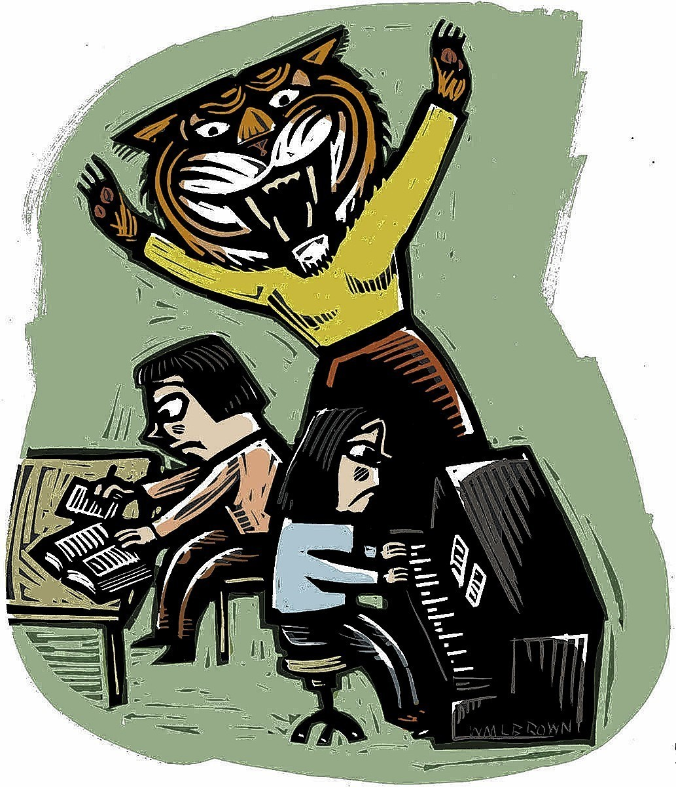

The Troubling Nature of Asian American Stereotypes

Based around the term “model minority”, or ethnical minorities who achieve high levels of success within America despite discrimination, the myth originated as a way to attribute the socioeconomic success and family stability of Asian Americans due to their cultural and family values. At the same time, this allowed them to shift the blame of the lack of success of other minority groups away from systemic racism and discrimination onto the shoulders of those minority groups, particularly African Americans, and claims that their “inferior” cultural values is what contributes to their struggles. In a sense, the model minority myth allows white supremacists to wield the achievements of Asian Americans as a tool to justify the continued oppression of minorities.
Yet, many people continue to mistakenly view the model minority myth as having a positive impact due to the stereotype’s positive connotations and superficial celebration of the hard-working nature and achievements of Asian Americans. Subsequently, many Asian Americans actually embrace the myth as the lesser of two evils of some sort. In reality, the effects of the model minority myth are extremely damaging on Asian Americans and their families, both in how they view and treat themselves, but also in how other races view and treat them.
First and foremost, as with all stereotypes, it paints all Asians in the same image, which is dismissive and disrespectful to the diversity of different Asian groups and their cultures/ traditions. On a smaller scale, it can pressure individual Asian Americans into fitting into the mold of the stereotype at the expense of their own choices and personal happiness, being expected to perform well academically. Speaking of education, while some do pursue education as a result of cultural values, namely filial piety or duty, like the myth suggests, many others did so for other self-oriented reasons, such as financial stability / mobility or self-fulfillment.
Secondly, the presentation of Asian Americans as the model minority, and the presumed benefits that being labelled as such can bring, can lead to tension between Asian Americans and other minority groups. As mentioned earlier, the model minority myth paints Asian Americans in a good light and labels black people as one of the “problem minorities”, which can lead to animosity and jealousy over the preferential treatment that Asian Americans receive. Adding on, by being perceived as the “model standard”, it gives off the impression that Asian Americans do not experience hardships or racism, and reduces people’s empathy and support towards Asian Americans. In particular, Asian Americans are commonly the target of racial microaggressions, brief yet persistent racist remarks that make Asian Americans self-conscious over their cultural differences and place within society. In the workplace or in dating, Asian Americans continue to be discriminated against on account of misguided beliefs about their lack of humanistic qualities, poor leadership, passivity, and feminized appearances. As such, the model minority myth prevents Asian Americans from fully assimilating into white society, perpetually regarded as foreigners and inferior, while also being walled off from their fellow minorities.
As preluded to before, the model minority myth brings to light the contradictions surrounding the view of Asian American families. Despite the myth praising the cultural value for its ability to raise hardworking and successful children, these same cultural values are also often a target of criticism. In particular, Asian American families have become infamous for their overbearing and heartless “Tiger” parents and gender inequality induced by the patriarchal hierarchy. Yet, these views are much more nuanced than portrayed. For instance, while Asian parents are generally strict and demanding of their children, they typically express their love for their children through other means, through their actions instead of expressing it verbally. In essence, the model minority myth reveals the need to re-evaluate our misconstrued generalizations of Asian Americans and their family dynamics.